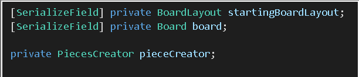
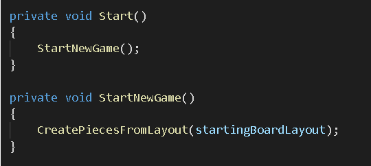
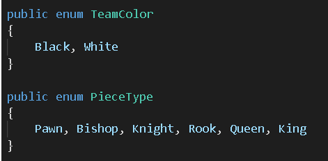
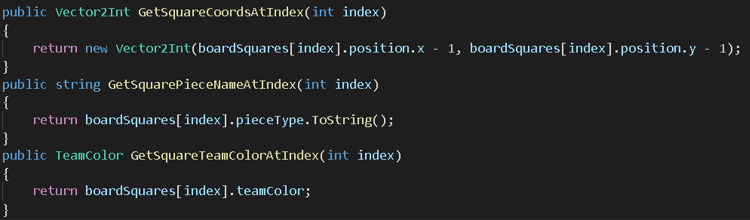
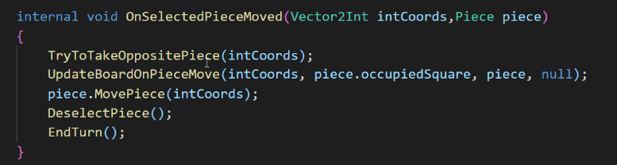
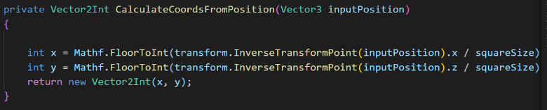
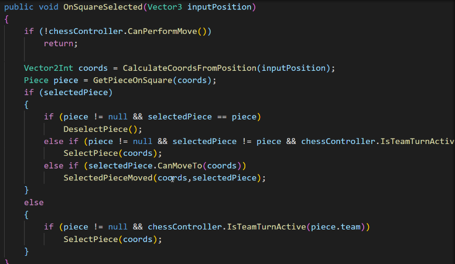
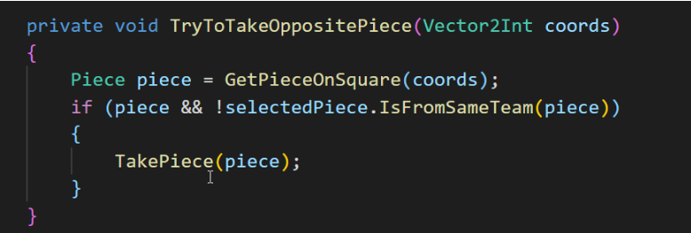

The ChessGameController is a central and important module; it sets the state of the game, of the player and the board. This module co-ordinates with modules like ChessPlayer, BoardLayout, Board and PieceCreator to constantly control the state of the current game. It calls the BoardLayout module to set the initial state of the board.
It sends out a call to the PieceCreator module to create and render the pieces in game as they are in their initial state. It tracks the status, team and pieces of the chess players by calling the ChessPlayer module. The ChessGameController can be thought of as a main class which calls and implements various other subclasses.
As seen above it creates objects of the above mentioned modules and implements them. It uses these modules to create the starting layout and place pieces, count number of pieces, who they belong to.
While the ChessGameController module deals with the overall state and game creation by calling other modules, the BoardLayout modules actually creates the initial layout and board state. The BoardLayout module is responsible for the state of the board. It acts as sort of a sub class and the main function which is the ChessGameController calls an object of the BoardLayout and implements it.
BoardLayout assigns variables and tracks which team the piece belongs to (black or white), along with which piece it is (rook, king etc.).
It allows other modules like the Board and ChessGameController module to get position co-ordinates, piece name (king) and piece colour (white). It calculates the position co-ordinates, piece name (king) and piece colour (white) and returns this information through member functions. These functions can be invoked or used by other modules when by calling an object of BoardLayout class.
The BoardLayout module can be thought of as a service provider of board information, for other modules to use.
This Function performs the move after a piece is selected, if a user is selecting a piece he can perform these 4 things TryToTakeOppositePiece , UpdateBoardOnPieceMove, MovePiece , deselectPiece , endTurn.
CalcuateCoordsFromPosition function is calculating the coordinates in the range of 0-7
OnSquareSelected function is used if a square is already selected and user is again selecting it so in result it should be deselected and if user is trying to move a piece then the selected piece should be moved to the new coordinates .
If a user is trying to take a piece this function will remove that piece. The Board Layout contains all the main functionality of the game.